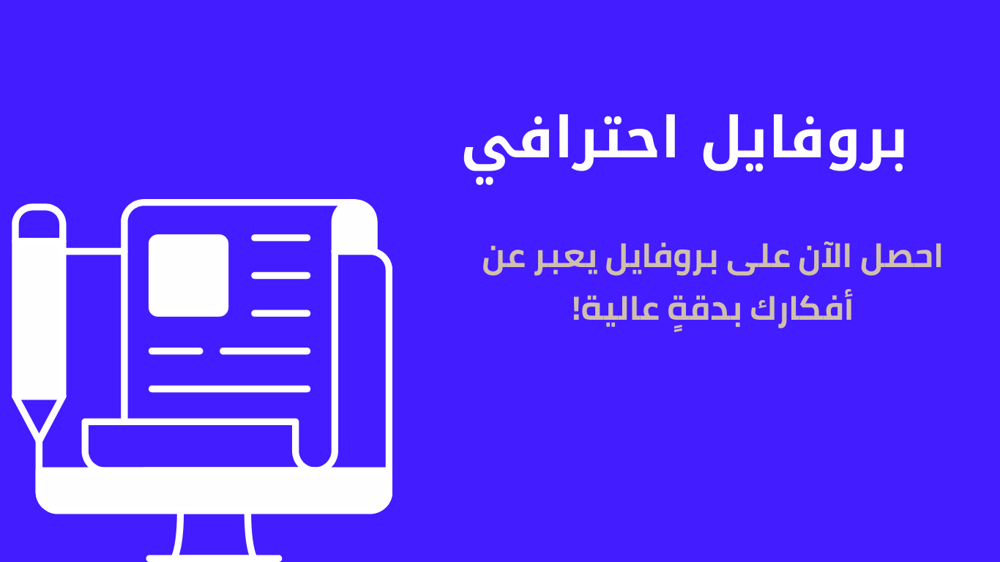

عندما تبدأ تأسيس مشروعك تبدأ في البحث عن كيفية كتابة بروفايل شركة احترافي؛ لأنه بمنزلة السيرة الذاتية للشركات. وحينها يجب عليك أن تراعي كل ما تكتبه في البروفايل؛ لأنه سيشكل حلقة الوصل الأولى بينك وبين العملاء المحتملين. في المقال الحالي سنعرض لك أهم الخطوات التي تساعدك في كتابة البروفايل. فتابع معنا:
الحكاية هي الأسلوب المحبب لدى القارئ، والكثير من الشركات تستهل التعريف بفقرة بعنوان (قصتنا) تنقل فيها تجربة التأسيس ورحلة التطوير؛ لتجذب القارئ، ويعرف مميزات الشركة. في هذه الفقرة تبدأ بفكرة مشروعك، وكيف واجهت العديد من التحديات عند التأسيس، وكيف طورت نشاطك؛ لتصل إلى وضعك الحالي. عليك أن تراعي عناصر القصة من الزمان والحبكة؛ لتكون أداة تسويقية فعّالة لعملائك؛ وتُحقق الهدف من البروفايل.
في السيرة الذاتية العادية تتحدث عن نفسك، وفي بروفايل الشركة فقرة التعريف تسمى (من نحن – من نكون – نبذة عنّا – نبذة عن الشركة) وكلها عنصر واحد باختلاف العناوين؛ فالغرض منه هو إظهار الجانب التعريفي للشركة مثل تاريخ التأسيس، والنشاط، والمقر، والميزة التنافسية. وغيرها من التفاصيل التي تهم العميل؛ يجب أن تراعي الإيجاز فيها وفي الوقت نفسه ألا تكون موجزة لدرجة الخلل. فالاعتدال دائمًا يربح؛ فعليك أن تجعله فقرة ليست بالطويلة المملة، ولا الموجزة المخلة.
رؤية الشركة من العناصر الهامة للغاية، وكذلك رسالة الشركة؛ فهما ركنان لا غنى عنهما في أي بروفايل تعريفي؛ وبشكلٍ بسيط؛ فإن الرؤية هي طموح الشركة المستقبلي، أو الغاية الأولى التي تسعى إليها، وهي قريبة من الأهداف غير أن الأهداف متعددة والرؤية هي الغاية الأسمى. أما الرسالة؛ فغالبًا ما تمثل الجانب المعنوي أو الإنساني للشركة؛ أي أنها تسعى إلى تقديم خدمة مجتمعية من وراء عملها مثل دعم الأفراد، أو التطوير وغيرها من الجوانب الإنسانية الراقية. يجب أن تكون الرؤية موجزة في سطرين على أقصى تقدير، وكذلك الرسالة؛ فالإسهاب فيهما ليس جيد.
الحديث عن أهدافك في البروفايل من الأمور المهمة؛ فهو يعطي انطباع للجمهور عن شركتك وطموحها؛ كما أن صياغة أهداف استراتيجية للشركة ترشد العاملين عن التوجه العام للعمل؛ لدفعهم لدعمه من خلال تطوير مهاراتهم. كما أن الأهداف يجب أن تكون قابلة للتحقيق؛ وتتفق مع مقومات العمل؛ وعليك أن تنظر بعين الواقع إليها ويُفضل أن تكون قصيرة وطويلة المدى؛ لتحفيزك على الاستمرار.
القيم هي تلك الأمور المعنوية التي تتخذها المؤسسة أو الشركة شعارًا لها؛ ويجب أن تتسق مع منهج وطبيعة عمل الشركة؛ فعلى سبيل المثال أنك صاحب شركة شحن؛ فمن القيم المميزة هنا هي قيمة الالتزم؛ والتي ستوضح للعميل حرصك على وقته والالتزام بالتسليم بجودة عالية وفي الوقت المتفق عليه. كما أن لهذه القيم دور أيضًا في إرشاد الموظفين إلى طريقة وآلية العمل؛ لضمان العمل بروح الفريق.
اقرأ المزيد عن هذا الموضوعفي قسم الخدمات أو المنتجات يجب الاعتماد على لغة دعائية جذابة؛ وذلك لتركز على مميزات ما تقدم بشكلٍ يضمن لك اهتمام العملاء. فاللغة الرتيبة لن تجذب القارئ؛ وربما تجعله يقلل من جودة عملك؛ فكلما كان البروفايل احترافي كانت النتائج مثالية؛ فكما يقولون أن الكتاب يُعرف من عنوانه! ويمكنك التواصل مع كاتب ترويجي متخصص لكتابة هذا القسم تحديدًا؛ لضمان الجودة المطلوبة.
الحديث عن فريق العمل من الجوانب المهمة في البروفايل التعريفي؛ فالفريق تعني الكيان والمؤسسة؛ لذلك عليك التركيز على مميزات فريق العمل لديك، وما الذي يجعلهم الخيار المثال لتنفيذ أعمال العملاء. في هذا البند البعض يركز على بعض المعايير التي يتمتع بها الفريق مثل العمل بروح الفريق والتعاون، والحرص على رضا العملاء. والبعض يركز على المهارات والخبرات العملية التي يتمتع بها أفراد الفريق.
هذا القسم يسمى أحيانًا بمنهجنا أو فلسفتنا وهي آلية عملك، وهي من الأمور التي ينظهر إليها العملاء؛ لمعرفة كيفية تنفيذك لأعمالهم، ومنهجك من الأمور المهمة التي تبعث الطمأنينة للعملاء؛ فإذا ذكرت مثلًا أنك تتبنى خدمة ما بعد البيع وأكدت عليها في بعض الفقرات الأخرى؛ ستجعل العملاء يتأكدون أنك أهل للثقة والتعاون.
وجه هذا السؤال لنفسك أولًا، واكتب المميزات التي تراها في شركتك وليست لدى المنافسين؛ ويُفضل أن تكون لعة المميزات في صورة نقاط موجزة تركز على حاجة العملاء؛ وعليك أن تعي جيدًا طبيعة عملائك؛ وعن الميزة التي يبحثون عنها؛ فهذا القسم مهم للغاية؛ ولا أريد أن أبالغ وأقول أنه الأهم، لكن عليك مراعاة كل نقطة فيه وصياغتها بحرفيةٍ شديدة.
للإجابة عن هذا السؤال فأمامك خياران الأول أن تكتبه بنفسك وذلك من خلال قراءة التعريف الخاص بالشركات المنافسة قراءة متأنية والاطلاع على مقاطع تعليمية لكتابة المحتوى التعريفي. هذه الخطوة ستأخذ منك وقت طويل، وربما لن يكون المنتج النهائي احترافي؛ كما أن اللغة ربما تكون بها العديد من الأخطاء اللغوية والإملائية، وعليك أن ترسلها إلى مراجع لغوي.
أما الخيار الثاني؛ فهو الذهاب مباشرة إلى كاتب متخصص وذو خبرةٍ عاليةٍ في صياغة البروفايل التعريفي؛ وفي هذه الحالة سيكون قلمك هو الخيار المثالي؛ كما سنوفر لك عروضًا خاص، ولك حق في طلب التعديلات حتى تصل إلى مرادك. لدينا فريق متكامل في مختلف تخصصات صناعة المحتوى النصي؛ ونفذنا أكثر من 400 مشروع لشركات وهيئات حكومية داخل وخارج الوطن العربي. ويمكنك التواصل الآن وطلب الخدمة.
احصل على بروفايل احترافي الآن